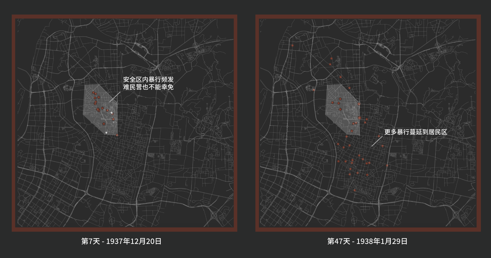

“我这不是想说这里的形势不严峻，形势的确严峻。不仅很严峻，而且会变得更加严峻。那么怎样才能对付这种严峻的形势呢？我认为，应当拿出自己的最后一份幽默，正视自己愚蠢的命运。” ——《拉贝日记》
“我们原先期望随着最高指挥官的到达能恢复秩序，但是遗憾的是，我们的愿望并没有实现。正相反，今天的情况比昨天还要糟糕。” ——《拉贝日记》
“仁慈的上帝，请您保佑所有的人免遭灾难，也请您保佑所有像我们这样已经身陷灾难中的人！我丝毫不后悔留了下来，因为我的存在拯救了许多人的性命。但尽管如此，我仍然感到极端的难受！” ——《拉贝日记》
“我们委员会总共管理有25个难民收容所，约7万名难民，其中的5万人必须要靠我们的救济过日子，因为他们已经一无所有了。您可能很难想象出这里的情形。攻占南京前，日本人对南京进行了数月之久的狂轰滥炸，但是，这同占领城市后日军造成的苦难是无法相提并论的。我们自己也感到不可理解，我们怎么能安稳地活到今天。” ——《拉贝日记》
据考证，早在1937年10月，南京安全区由金陵大学的外籍教授策划建立，后来拉贝借鉴上海做法于11月22日成立南京国际安全区委员会，在市中心划定3.86平方公里的国际安全区，建立20多个难民收容所，保护因战争而流离失所的南京市民。12月8日，安全区委员会发布《告南京市民书》，呼吁市民进入安全区躲避战祸，南京国际安全区向难民开放。据统计，先后共有20多万难民进入安全区避难，其中大约5万难民在收容所被安置。
从位置来看，南京安全区位于南京市区西部，总面积为8.6平方公里。据《论南京国际安全区的成立》中分析，南京安全区选取位置其实经过了慎重的考虑。其一，安全区位于市区的西部，距交战区域较远。其二，安全区中居住了许多政府高官以及有显赫人士。这些人大多随政府西迁而撤离。空置住宅较多便于安置难民。其三，安全区内外国使馆林立，包括日本大使馆在内的许多国家使馆都设于此。且安全区内外国财产也较为集中，比如金陵大学、金陵女子文理学院、金陵神学院、鼓楼医院、中英文化协会等。这些外国财产的存在，不仅使日军在轰炸和炮击时有所收敛，而且国际委员会也能有效保护这些财产安全。其四，在安全区内，中国军事设施较少，以保证安全区的“非军事化”。
但即便在拉贝等国际友人经过重重考虑，克服各种困难，得以建立南京安全区，但这并不意味着安全区就与安全挂钩，难民营也并不能完全庇护难民。
其一，安全区里的难民营存在，既保护了大批难民避免被屠杀的命运，但也成为日军暴行时的“靶子”，即存在“二律背反”现象。
从下方的统计地图上看，多个难民营经历暴行数量更多，比如圣经师资培训学校难民收容所有11条记录，金陵女子文理学院难民收容所有8条记录，小桃园难民收容所、鼓楼西难民收容所有7条记录，均显著高于其他地点的记录。究其原因，一是难民所里一般有负责人，且经常被管理者视察，故目睹暴行后即被记录；二是难民所的成立，也为日军提供了实施暴行的“靶子”。
比如设置在金陵女子文理学院的难民收容所，里面的难民几乎全是妇女和儿童，成为日军找寻强奸对象的主要处所，记录的暴行中6起均与“强奸”有关。这一点在金陵文理学院美籍教授魏特琳的日记中也得到印证，在1937年12月16日的日记中也记录到这样的暴行：“今天世上所有的罪行都可以在这座城市（南京）里找到。昨晚30名女学生被从语言学校抓走，今天我听到了数十起有关昨夜被抓走女子的悲惨遭遇——其中一位女孩仅12岁。” 再比如圣经师资训练学校难民收容所，据委员会检查得知，有难民3400人，属于较大的难民营之一，常常受到日本士兵的抢劫和骚扰，70%妇女被强奸过。从记录的暴行来看，有9起事件与“强奸”、“找姑娘”有关。而司法部难民收容所、最高法院难民所里，大部分难民被捆绑拖走枪杀，剩余的人也被驱赶出，成为安全区内的集体屠杀事件代表，两个难民营亦被认为是“失败的难民营”。
事件的地理分布
事件发生在难民营
事件发生在其他地点
通过这一可视化我们可以发现，在前期，拉贝记录的暴行主要发生在安全区内部。同时我们可以注意到，即便是专门为保护难民而建立的难民营（图上的白色点）也不能幸免。到1月之后，暴行的记载逐渐减少。1月末，随着日军不断逼迫解散安全区，拉贝记录的暴行又开始大量增加，并且明显地蔓延到了安全区以外——大量难民在回家途中或原本自己的居所中，再次经历日军的暴行。这一点从后期记录的事件来源也可以看出，很大部分暴行记录来自于再次回到安全区平民的口述。不少居民在回家路上或到家后，遭受到日军蹂躏，不得以又回到安全区，而尚未离开的居民则请求“不要让他们离开”，一些妇女表示，“与其我们回家被人杀死，还不如留在这里，等到2月4日日本人来驱赶我们，被他们杀死在难民收容所好了。”可见，尽管算不上绝对安全，南京安全区却是战时平民心中值得托付和依赖的容身之所。在那个山河破碎的时代，难民们的命运如雨打浮萍，所求不过苟全性命，一张草席，一碗米粥。

1938年2月18日，在日本当局的干涉下，安全区委员会更名国际救济委员会，并宣告解散。5月，安全区里的难民营完全关闭。安全区解除后，不少有关南京大屠杀的资料或照片，也纷纷传回国际社会，在巨大的社会舆论谴责下，日军的残暴行为逐渐收敛至结束。
让人叹息的是，以拉贝为代表的南京安全区国际委员会成员，既是难民的保护者，也是暴行的受害人。一方面，他们鼓励着一批又一批难民：“中国没有亡，中国不会亡，日本一定会失败”、“你不用佩戴太阳旗，你是中国人，你们的国家没有亡！你要记住是哪年哪月戴过这个东西的，你永远不要忘记！”但另一方面，这当中大部分的人结局却并不美满。
拉贝，既因为提交南京大屠杀相关资料被盖世太保审问，又因为纳粹身份在战后被诉讼，最终在饥寒和贫穷中因中风去世。
威尔逊，付出了健康的代价。在安全区时，手术消耗了他白天的大部分精力，晚上日兵又会打扰他休息，他不时被从家里叫出来，去阻止正在发生的强暴事件。1940年，威尔逊突然发作癫痫且精神崩溃，此后长期遭受癫痫和噩梦折磨，还出现早上视力模糊的麻烦。
魏特琳, 付出了生命的代价。1940年魏特琳因精神失常而被送往美国接受电击治疗。在离开南京一年后，魏特琳在家中用胶带封住门窗的缝隙，打开煤气自杀。
费奇，遭受极大的精神创伤，以致当他就这一主题进行演讲时，常常会突然完全失忆。
不同于和平年代人口的自然流动，战时人类命运更加身不由己。安全区虽然并不绝对安全，但已然能减缓日军杀戮机器的运转。以拉贝先生为代表的国际人道主义精神，值得被历史永远铭记。
参考文献：
约翰·拉贝,《拉贝日记》,刘海宁等译,江苏人民出版社.
张纯如,《南京浩劫》,杨夏鸣译,东方出版社.
朱天乐,朱成山.南京安全区难民生存的真相——兼论南京难民经历“法益侵害”和“人道救援”的双重际遇[J].民国档案,2020(04):119-128.
张生.死神面前的“不平等”——南京大屠杀期间国际安全区中国难民内部分层[J].西南大学学报(社会科学版),2016,42(06):169-174.
张连红.南京大屠杀时期的日军当局与南京安全区[J].近代史研究,2001(03):227-248.
王卫星.论南京国际安全区的成立[J].民国档案,2005(04):103-110.
朱成山,考证南京难民收容所,http://neverforget.sina.com.cn/pl/2005-08-02/22161028.html
孙宅巍,南京大屠杀期间的难民收容所研究,http://www.js-skl.org.cn/uploads/Files/2017-09/14/1-1505358201-135.pdf
维基百科,南京安全区,https://zh.wikipedia.org/wiki/南京安全区
维基百科,南京大屠杀期间难民收容所列表，https://zh.wikipedia.org/wiki/南京大屠杀期间难民收容所列表
维基百科,拉贝日记,https://zh.wikipedia.org/wiki/拉贝日记
中新网,拉贝的1937年：家中最多挤入602个中国难民,http://www.chinanews.com/cul/2012/12-14/4409016.shtml
电影《拉贝日记》,https://movie.douban.com/subject/2294565/